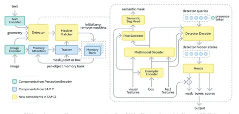

Сегодня разберём статью, посвященную сегментации изображений по промптам. Кроме самого подхода к сегментации, авторы описывают сбор данных и добавление фичей, который не было в SAM 2.
Главные преимущества новой модели:
- задачи сегментации и детекции решаются сильно ближе к нашим ожиданиям,
- более сложные маски стали заметно точнее.
Дальше подробнее о том, какие задачи имеются в виду.
1) Promptable Visual Segmentation (PVS). Промпт бывает нескольких видов:
- Геометрический — когда вы даёте точку на картинке и говорите: «Сегментируй объект в этой точке». Позволяет в интерактивном режиме точно и красиво определять маски. Другой вид геометрического промпта — бокс с указанием: «Вот тут какой-то объект, сегментируй его».
- Текстовый — например: «Сегментируй кошку на картинке».
- Визуальный — подаётся запрос: «Вот тебе картинка, обведи кошку», и модель должна выделить всех кошек на изображении. То есть можно передать ей сколько угодно изображений и получить сегментационную маску по этим референсам. В SAM 3 на эту задачу обращают особое внимание.
2) Promptable Concept Segmentation (PСS). Тут предлагают задавать более сложные запросы. Такие концепты в работе называют short noun phrase. Пишут, что PCS позволяет визуальным агентам лучше понимать изображение.
Всего этого авторы добиваются при помощи хитрых изменений SAM 2. Основные из них — введение concept detector (DETR-based) и object presence head, отвечающего за присутствие объекта на картинке.
Для обработки визуальных запросов берут картиночный энкодер, хорошо заалайненный с текстовым. Если в промпте есть картинка с боксом, её эмбедят при помощи этого энкодера (exemplar encoder). Для обработки текстов считаются text features. Все входы передаются в трансформер, а потом — в pixel decoder, который выдаёт маски, как в MaskFormer.
Самое интересное — presence token. Это отдельный обучаемый токен, который отвечает за то, есть ли объект на картинке. Дальше по DETR-логике: есть queries, из них декодируются маски с аттеншном на мультимодальные фичи, но их score дополнительно умножается на score presence token. И если объекта нет, то и score у всех масок становится близким к нулю, и они отбрасываются.
Как обычно, в такой задаче очень многое зависит от данных.
Авторы собирают пайплайн, в котором есть media pool (много картинок) и ontology (граф концептов из Wikipedia). Для каждой картинки добавляют концепты.
Сначала берут SAM 2 и open-world-детекторы, вроде OWL или YOLO-World. Этому пайплайну скармливают немного картинок, просят задетектить и затем найти все объекты. Так получают первый набор для датасета — несколько миллионов семплов. Дальше его рефайнят руками.
Затем берут media pool с концептами и обогащают извлечённые концепты. Предсказывают маски и отдают их разметчикам (людям и моделям). Если что-то не так, люди корректируют маски, причём обычно управляя изменениями при помощи SAM 2 (в качестве промпта используя точки). И снова тот же цикл: шаг обучения, шаг пересборки и обогащения.
AI-верифаеры решают две задачи:
- Mask Verification — корректна ли маска;
- Exhaustivity Verification — все ли объекты по промпту найдены.
Это важно, потому что VLM используется в дискриминативном режиме, то есть она просто говорит «ок / не ок». Также в процессе VLM дообучают на ответах людей-разметчиков.
Видео добавляют только на финальном этапе, после того как обучили несколько версий SAM и нормальный верификатор.
В итоге такой пайплайн ускоряет сбор датасета примерно в два раза.
На LVIS — стандартном бенчмарке по детекции — качество выросло почти на 10%, что очень много.
На H200 GPU модель выдает 30 миллисекунд, при небольшом размере: где-то 1–1,5 млрд параметров. Кажется, что для модели такого размера можно было бы взять L40, но кто мы такие, чтобы мешать выпендриваться?
Статья интересна тем, что в ней сочетается множество трюков из разных областей компьютерного зрения: от DETR-архитектур до VLM. Каждый, кто занимался детекцией и сегментацией, найдёт для себя что-то любопытное.
Разбор подготовил
CV Time
